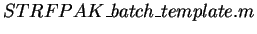
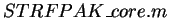

Next: Summary and Things to
Up: STRFPAK: A Spatio-temporal Receptive
Previous: Load Prev Result
Contents
For a large sets of data, you may want to run STRFPAK-2.0 in a batch-mode.
The easiest way to do this is as follows:
First, run one cell from your data set with the graphical version of STRFPAK. As well as the result files like strfResult.mat containing the strfs and info_r_result.mat containing their goodness of fit, a file called STRFPAK_script.m will be saved in the output
directory, containing a script of all the actions performed by the graphical version of
STRFPAK. Edit it (Note: you may need add preprocessing routines) and embed it into a loop
as you would any other Matlab script file for a
fast batch mode. Remember that the output directory for each STRFPAK run should be unique
to avoid having STRFPAK overwrite previous results.
Also provided are template batch-mode codes,
 and
. All the required parameters need specified in
.
If you have different data layout from demo data, you also need modify
.
Feel free to email Junli (junli@socrates.berkeley.edu) if you run into any problems.
Next: Summary and Things to
Up: STRFPAK: A Spatio-temporal Receptive
Previous: Load Prev Result
Contents
2004-08-09